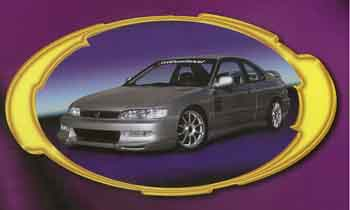

All Kaminari components are constructed using only proven handcrafted processes that assure extremely rigid, warp free parts. Our precision fitted parts are predrilled for easy installation and come complete with installation instructions and all necessary hardware. Each Kaminari component is covered by the new three-year Kaminari limited warranty.
| Vehicle Make & Model | Year | Component Description | Part No. | Misc. Info |
| TOYOTA Camry | 89-91 | |||
| TOYOTA Celica | 84-85 | |||
| TOYOTA Celica | 86-88 | |||
| TOYOTA Celica | 90-92 | |||
| TOYOTA MR-2 | 85-90 | |||
| TOYOTA MR-2 (turbo and non-turbo) | 91-93 | |||
| TOYOTA Supra | 84-86 | |||
| TOYOTA Supra | 86.5-88 | |||
| TOYOTA Supra 89-92 | 89-92 |